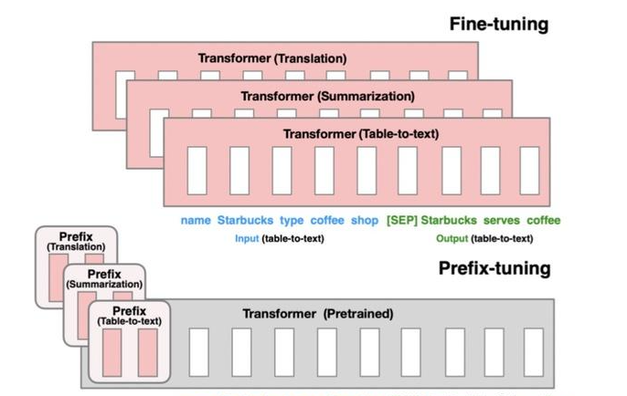
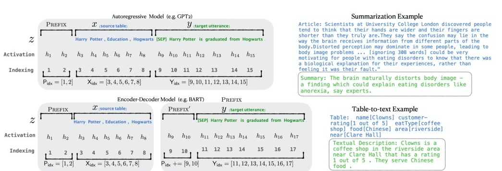
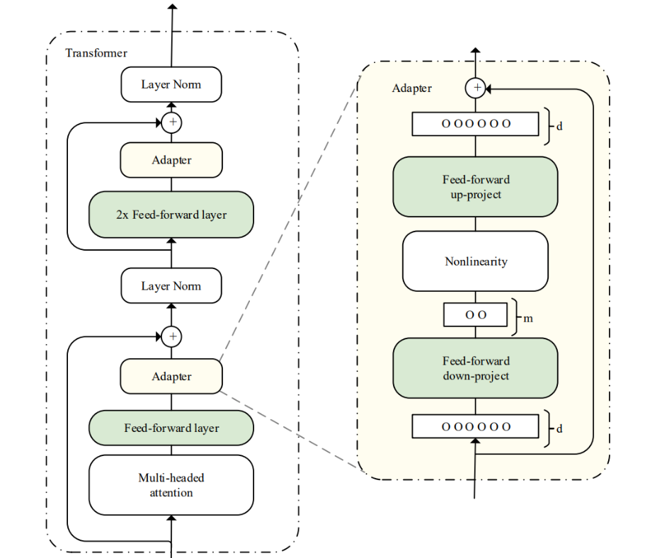
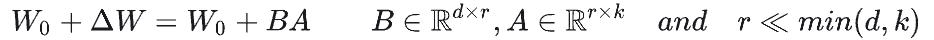
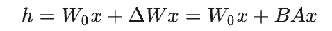
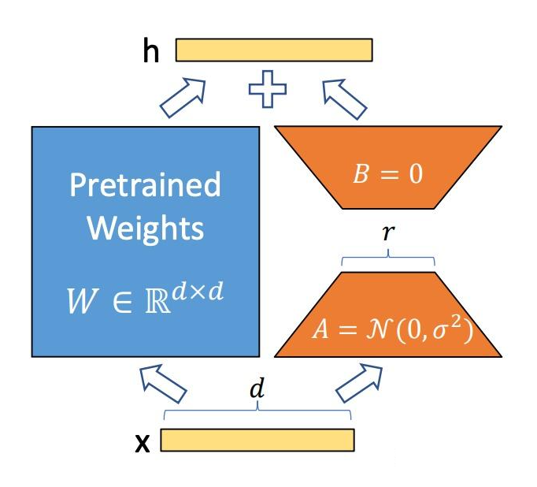

🧩 PEFT 参数高效微调：Prefix、Adapter、LoRA 与 QLoRA
课堂笔记提要：PEFT 的共同思路是冻结大模型主干、只训练小的新增参数：Prefix 在每层注意力拼接可学习的 K/V，Adapter 在层间插入瓶颈模块，LoRA 用低秩矩阵近似权重更新，QLoRA 再叠加 4-bit 量化让消费级显卡也能微调大模型。
学习目标
- 理解Prefix-Tuning、Adapter-Tuning、LoRA三种大模型参数微调方法的原理
PEFT(大模型参数高效微调)
目前在工业界应用大模型主流方式：参数高效微调方法（Parameter-Efficient Fine-Tuning，PEFT），PEFT 方法仅微调少量或额外的模型参数，固定大部分预训练参数，大大降低了计算和存储成本，同时最先进的 PEFT 技术也能实现了与全量微调相当的性能。
该方法可以使 PLM 高效适应各种下游应用任务，而无需微调预训练模型的所有参数，且让大模型在消费级硬件上进行全量微调（Full Fine-Tuning）变得可行。
目前应用较多的PEFT方法主要分为三大类：
- Prefix/Prompt-Tuning：在模型的输入或隐层添加 \(k\)个额外可训练的前缀 tokens（这些前缀是连续的伪 tokens，不对应真实的 tokens），只训练这些前缀参数；
- Adapter-Tuning：将较小的神经网络层或模块插入预训练模型的每一层，这些新插入的神经模块称为 adapter（适配器），下游任务微调时也只训练这些适配器参数；
- LoRA：通过学习小参数的低秩矩阵来近似模型权重矩阵 \(W\)的参数更新，训练时只优化低秩矩阵参数；
此外Hugging Face 开源的一个高效微调大模型的库PEFT，该算法库支持上述三类方法，可以直接调用。
1. Prefix Tuning
Prefix-Tuning 在模型输入前添加一个连续的且任务特定的向量序列（continuous task-specific vectors），称之为前缀（prefix）。前缀被视为一系列“虚拟 tokens”，但是它由不对应于真实 tokens 的自由参数组成。与更新所有 PLM 参数的全量微调不同，Prefix-Tuning 固定 PLM 的所有参数，只更新优化特定任务的 prefix。因此，在生产部署时，只需要存储一个大型 PLM 的副本和一个学习到的特定任务的 prefix，每个下游任务只产生非常小的额外的计算和存储开销。

Fine-tuning 更新所有 PLM 参数，并且需要为每个任务存储完整的模型副本。Prefix-tuning 冻结了 PLM 参数并且只优化了 prefix。因此，只需要为每个任务存储特定 prefix，使 Prefix-tuning 模块化且节省存储空间。
具体实现流程如下：
（1）确定任务与基模型
- 任务：条件生成（如摘要、表格到文本、对话）或 seq2seq。
- 选模型：GPT-2/decoder-only 或 BART/T5（encoder-decoder）。
（2）设计 prefix 配置
- 决定
num_prefix（每层的虚拟 token 数，常见 10–100），以及是否对所有层都使用 prefix（论文对每层都用了 prefix，但可做只对部分层）。
（3）构造可训练参数（初始化）
可以为每层创建一个可以训练的矩阵\(P_θ\) ，作为前缀向量拼接到原向量中。但是论文中提出直接优化 \(P_θ\) 会导致训练不稳定，可以通过一个更小的矩阵 \(P_w\)和一个更大的前馈神经网络\(MLP_θ\) 对\(P_θ\) 进行重参数化: \(P_θ[i,:]=MLP_θ(P_w[i,:])\) 。
所以目前实际实现时，通常会先训练一个 (num_layers, num_prefix, hidden_dim) 的 prefix embedding，然后通过一个小的 MLP 投影成 (num_layers, num_prefix, 2 * head_dim * num_heads)，再 reshape 成 (num_layers, num_heads, num_prefix, head_dim)，分别拆成 K 和 V。因此需要创建一个可训练的矩阵 \(P_θ\) ，以及一个MLP模型。
（4）修改模型前向（插入 prefix）
- 在 Transformer 的每一层注意力里，将 prefix 对应的 key/value 拼接到原始的 key/value——这样后续 token 可以像“看到真实 tokens”一样 attend 到 prefix，然后一起进行训练。
（5）训练设置
- 冻结原模型参数（
requires_grad=False），只对 prefix 参数做优化。 - 损失函数通常是标准的交叉熵，训练器只更新 prefix。
（6）推理
- 推理时把训练好的 prefix 附加到每层（同训练时），然后用常见的解码策略进行生成。
如下图所示，以 GPT2 的自回归语言模型为例，将输入 \(x\) 和输出 \(y\) 拼接为 \(z=[x;y]\) ，经过 LM 的某一层计算隐层表示\(h=[h_1,...,h_i,....,h_n]\) ， \(h_i=LM_Ø(z_i, h<i)\) ，其中， \(X_{idx}\) 和\(Y_{idx}\)分别为输入和输出序列的索引。
Prefix-Tuning 在输入前添加前缀，即\(z=[Prefix,x,y]\) ，\(P_{idx}\)为前缀序列的索引，\(|P_{idx}|\) 为前缀的长度。前缀索引对应着由\(θ\)参数化的向量矩阵 \(P_θ\) ，维度为\(|P_{idx}|×dim(h_i)\)。

在训练时，LM 的参数 \(Ø\) 被固定，只有前缀参数 \(θ\) 为可训练的参数。训练完成后，只有前缀\(P_θ\)被保存。
示例代码：
# 除了下面这个地方外，其他和P-Tuning V2大致相同。 # “经典 Prefix Tuning” 与P-Tuning V2的核心差异：没有 virtual tokens + MLP 映射，而是为每层直接学习 k/v 参数。 class SimplePrefixTuningEncoder(nn.Module): def __init__(self, prefix_len, num_layers, num_heads, head_dim): super().__init__() self.prefix_len = prefix_len self.num_layers = num_layers self.num_heads = num_heads self.head_dim = head_dim # 直接为每层维护 k 和 v（注意这里是未 reshape 的扁平表示） # shape: (num_layers, prefix_len, num_heads * head_dim) self.k_params = nn.Parameter(torch.randn(num_layers, prefix_len, num_heads * head_dim) * 0.02) self.v_params = nn.Parameter(torch.randn(num_layers, prefix_len, num_heads * head_dim) * 0.02) def forward(self, batch_size): outs = [] for l in range(self.num_layers): k_flat = self.k_params[l].unsqueeze(0).expand(batch_size, -1, -1) # (B, P, H*D_h) v_flat = self.v_params[l].unsqueeze(0).expand(batch_size, -1, -1) k = reshape_to_kv(k_flat, batch_size, self.prefix_len, self.num_heads, self.head_dim) # (B,H,P,D_h) v = reshape_to_kv(v_flat, batch_size, self.prefix_len, self.num_heads, self.head_dim) outs.append((k, v)) return outs
Prefix Tuning的特点：
- 优点：
- 只训练少量 prefix 参数，相对全量微调的存储和训练成本低。
- 不同任务只需切换 prefix，无需保存多个完整模型。
- 缺点
- 小模型表现差：在 BERT-base 等小模型上效果不佳
- 需在每层注入 prefix，会占用输入序列的长度
- 在判别式任务上常逊于 LoRA、P-Tuning v2
2. Adapter Tuning
与 Prefix Tuning 和 Prompt Tuning 这类在输入前可训练添加 prompt embedding 参数来以少量参数适配下游任务不同，Adapter Tuning 则是在预训练模型内部的网络层之间添加新的网络层或模块来适配下游任务。
假设预训练模型函数表示为\(Ø_w(x)\)，对于 Adapter Tuning ，添加适配器之后模型函数更新为\(Ø_{w,w_0}(x)\)， \(w\)是预训练模型的参数， \(w_0\)是新添加的适配器的参数，在训练过程中， \(w\)被固定，只有 \(w_0\)被更新。\(|w_0|<<|w|\) ，这使得不同下游任务只需要添加少量可训练的参数即可，节省计算和存储开销，同时共享大规模预训练模型。

Series Adapter的适配器结构和与 Transformer 的集成如上图所示。适配器模块被添加到每个 Transformer 层两次：多头注意力映射之后和两层前馈神经网络之后。适配器是一个 bottleneck（瓶颈）结构的模块，由一个两层的前馈神经网络（由向下投影矩阵、非线性函数和向上投影矩阵构成）和一个输出输出之间的残差连接组成。
示例代码：
import torch import torch.nn as nn import torch.optim as optim # --------- Adapter 模块（bottleneck 结构）--------- class Adapter(nn.Module): def __init__(self, hidden_size, bottleneck_size, nonlinearity=nn.ReLU()): """ hidden_size: Transformer 层输出维度（例如 768） bottleneck_size: adapter 内部降维 (e.g., 64) """ super().__init__() # down-project -> nonlinearity -> up-project self.down_proj = nn.Linear(hidden_size, bottleneck_size) self.act = nonlinearity self.up_proj = nn.Linear(bottleneck_size, hidden_size) # 可选的小膨胀（scaling）参数 self.scale = nn.Parameter(torch.tensor(1.0)) # 或常量 # 有时在 adapter 前加 LayerNorm self.layer_norm = nn.LayerNorm(hidden_size) def forward(self, x): # x: [batch, seq_len, hidden_size] residual = x x = self.layer_norm(x) x = self.down_proj(x) # 降维 x = self.act(x) x = self.up_proj(x) # 恢复维度 return residual + self.scale * x # skip connection（残差） # --------- 在 Transformer Block 中插入 Adapter（常见位置）--------- class TransformerBlockWithAdapter(nn.Module): def __init__(self, original_block, adapter_cfg): """ original_block: 预训练的 Transformer 子模块（包含 attention + ff） adapter_cfg: dict, e.g. {"bottleneck":64, "position":"after_ff"} """ super().__init__() self.orig = original_block # 冻结或不冻结由上层决定 # 根据配置在 attention 或 feed-forward 后插入 adapter self.adapter = Adapter(hidden_size=original_block.hidden_size, bottleneck_size=adapter_cfg["bottleneck"]) self.position = adapter_cfg.get("position", "after_ff") def forward(self, hidden_states, attention_mask=None): # 使用原始 block 的 forward（attention + ff） h = self.orig.forward(hidden_states, attention_mask=attention_mask) # 在指定位置调用 adapter（这里把 orig.forward 的输出看成 final） if self.position in ("after_ff", "after_output"): h = self.adapter(h) return h # --------- 构造带 Adapter 的模型（示意）--------- class ModelWithAdapters(nn.Module): def __init__(self, base_transformer, adapter_cfg): super().__init__() # 把每个 transformer layer 包装为带 adapter 的 layer self.layers = nn.ModuleList([ TransformerBlockWithAdapter(layer, adapter_cfg) for layer in base_transformer.layers ]) self.pooler = base_transformer.pooler # 或自定义 classifier head # 任务输出头（比如分类） self.classifier = nn.Linear(base_transformer.hidden_size, num_labels) def forward(self, input_ids, attention_mask=None): h = base_transformer.embed(input_ids) # 词嵌入 for layer in self.layers: h = layer(h, attention_mask) pooled = self.pooler(h) # [batch, hidden_size] logits = self.classifier(pooled) return logits # --------- 冻结基模型权重，只训练 adapter（和可能的 task head）--------- def freeze_base_model_params(model): """ 冻结模型中除 Adapter 与 classifier 外的所有参数。 假设 Adapter 的类名为 Adapter，任务头命名为 model.classifier（可按需调整）。 """ # 先默认冻结所有参数 for p in model.parameters(): p.requires_grad = False # 解冻所有 Adapter 模块的参数 for module in model.modules(): if isinstance(module, Adapter): for p in module.parameters(): p.requires_grad = True # 解冻 classifier（任务头） if hasattr(model, "classifier"): for p in model.classifier.parameters(): p.requires_grad = True # --------- 训练循环（只更新 adapter 和 head）--------- def main(): # 1. 构造基模型与带 adapter 的封装 base_transformer = load_pretrained_transformer() # 伪函数 model = ModelWithAdapters(base_transformer, adapter_cfg={"bottleneck":64, "position":"after_ff"}) # 2. 冻结基模型（必须在创建 optimizer 之前） freeze_base_model_params(model) # 3. 创建优化器，只包含 requires_grad=True 的参数 trainable_params = [p for p in model.parameters() if p.requires_grad] optimizer = torch.optim.AdamW(trainable_params, lr=1e-4) # 4. 训练（train 函数内部使用同一逻辑也可以） loss_fn = nn.CrossEntropyLoss() model.train() for epoch in range(num_epochs): for batch in dataloader: logits = model(batch['input_ids'], batch.get('attention_mask')) loss = loss_fn(logits, batch['labels']) optimizer.zero_grad() loss.backward() optimizer.step() # --------- 保存 / 加载 adapter 权重（常用做法）--------- def save_adapter(model, path): # 仅保存 adapter 和 task head 的 state_dict（便于共享与切换） adapter_state = {} for name, param in model.named_parameters(): if 'adapter' in name or 'classifier' in name: adapter_state[name] = param.detach().cpu() torch.save(adapter_state, path) def load_adapter(model, path): adapter_state = torch.load(path, map_location='cpu') model_state = model.state_dict() for k, v in adapter_state.items(): if k in model_state: model_state[k].copy_(v) model.load_state_dict(model_state) # --------- 推理（Inference）--------- def inference(model, inputs): model.eval() with torch.no_grad(): logits = model(inputs['input_ids'], inputs.get('attention_mask', None)) preds = logits.argmax(dim=-1) return preds
Adapter Tuning的特点：
- 优点：
- 只训练少量 adapter 参数，相对全量微调的存储和训练成本低。
- 可以为多个任务保存不同的 adapter，而共享一个大模型。
- 多个任务的 adapters 可以在推理时进行切换或融合，提升迁移和泛化能力。
- 缺点
- 因为大部分参数被冻结，adapter 的容量有限，对复杂任务或需要大规模参数调整的任务可能效果不如全量微调。
- Adapter 的维度大小（瓶颈层大小）、插入位置等超参数对性能影响较大，调参复杂度较高。
- PLM 基础上添加适配器层会引入额外的计算，带来推理延迟问题
3. LoRA
上述Adapter Tuning 方法在 PLM 基础上添加适配器层会引入额外的计算，带来推理延迟问题；而 Prefix Tuning 方法难以优化，其性能随可训练参数规模非单调变化，更根本的是，为前缀保留部分序列长度必然会减少用于处理下游任务的序列长度。因此微软推出了LoRA方法。
LORA的实现方式
我们先思考两个问题：为何用数千的样本就能将一个数十亿参数的模型微调得比较好？为何大模型表现出很好的few-shot能力？
Aghajanyan的研究（《Intrinsic Dimensionality Explains the Effectiveness of Language Model Fine-Tuning》）表明：预训练模型拥有极小的内在维度(instrisic dimension)，即存在一个极低维度的参数，微调它和在全参数空间中微调能起到相同的效果【大模型在预训练阶段已经学到了更多的“通用特征”，所以在微调时，只需要在一个更小的方向空间中“对齐”或“修正”即可】。
同时Aghajanyan发现在预训练后，越大的模型有越小的内在维度，这也解释了为何大模型都拥有很好的few-shot能力【因为它们已经覆盖了大部分语言知识，少量参数更新（甚至几条示例 in-context）就能把输出方向调整到目标任务】。
受instrisic dimension工作的启发，作者认为参数更新过程中也存在一个‘内在秩’。对于预训练权重矩阵 $ W_0$ ，我们可以用一个低秩分解 $ \Delta W $ 来表示参数更新，即：

训练过程中冻结参数 $ W_0$ ，仅训练A和B中的参数。如上图所示，前向传播过程变为

这种方式则称为低秩适应（Low-Rank Adaptation），其核心思想是对大型模型的权重矩阵进行隐式的低秩转换，也就是：通过一个较低维度的表示来近似表示一个高维矩阵或数据集。

基本原理：LoRA技术冻结预训练模型的权重，并在每个Transformer块中注入可训练层（称为秩分解矩阵），即在模型的Linear层的旁边增加一个“旁支”A和B。其中，A将数据从d维降到r维，这个r是LoRA的秩，是一个重要的超参数；B将数据从r维升到d维，B部分的参数初始为0。模型训练结束后，需要将A+B部分的参数与原大模型的参数合并在一起使用。
示例代码：
# ------------------------- # 配置与超参数 # ------------------------- RANK = 8 # r，LoRA 的秩（通常很小，如 4, 8, 16） ALPHA = 16 # 缩放系数 alpha（常见做法：alpha ≈ r 或者更大） LORA_DROPOUT = 0.1 # 可选：对 LoRA 下采样结果使用 dropout LEARNING_RATE = 3e-4 # ------------------------- # 简单的 LoRA 模块（伪实现） # ------------------------- class LoRALinear: """ 将 LoRA 嵌入到一个线性层的替代模块中（用于说明）。 设原始线性层为 y = W x（W: out x in）。 我们将输出改为 y = W x + (alpha/r) * B (A x)。 """ def __init__(self, orig_linear, r=RANK, alpha=ALPHA, dropout=LORA_DROPOUT): self.orig = orig_linear # 原始线性层（预训练权重 W），保持不训练（冻结） out, inp = orig_linear.weight.shape # 假设形状 (out, in) self.r = r self.scaling = alpha / r # 初始化 LoRA 参数：A (r x in), B (out x r) # 常见初始化：A 用小方差正态，B 用零（或小方差） self.A = Parameter(shape=(r, inp), requires_grad=True) self.B = Parameter(shape=(out, r), requires_grad=True) initialize(self.A, method="normal", std=0.01) initialize(self.B, method="zeros") # 将 B 初始化为零可稳定训练 self.dropout = Dropout(dropout) if dropout > 0 else None def forward(self, x): # x: shape (batch, in) base_out = self.orig(x) # 原始权重输出 (batch, out) # LoRA 增量部分 down = x @ self.A.T # (batch, in) @ (in, r) -> (batch, r) if self.dropout: down = self.dropout(down) # 仍然 (batch, r) up = down @ self.B.T # (batch, r) @ (r, out) -> (batch, out) lora_out = self.scaling * up return base_out + lora_out # ------------------------- # 将 LoRA 插入到 Transformer 的注意力层（示例） # ------------------------- def replace_module(model, target_name, new_module): """ 在 model 中找到名字为 target_name 的子模块， 用 new_module 替换掉它。 """ parent = model name_parts = target_name.split(".") # 找到最后一级的父模块 for p in name_parts[:-1]: parent = getattr(parent, p) # 替换子模块 setattr(parent, name_parts[-1], new_module) def inject_lora_into_model(model, target_modules=["q_proj", "v_proj", "o_proj"], r=RANK, alpha=ALPHA): """ 遍历模型的模块，把指定名字的线性层替换为 LoRA 版本。 target_modules 例子：在某些实现中 query/key/value projection 名称可能是 "q", "k", "v" 或 "q_proj" 等。 """ for name, module in model.named_modules(): if is_linear_layer(module) and match_name(name, target_modules): # 用 LoRA 包装原始线性层（保留原始权重以便可选合并） lora_wrapped = LoRALinear(module, r=r, alpha=alpha, dropout=LORA_DROPOUT) replace_module(model, name, lora_wrapped) return model # ------------------------- # 冻结基模型，只训练 LoRA 参数 # ------------------------- def freeze_base_model_except_lora(model): for p in model.parameters(): p.requires_grad = False # 只把 LoRA 参数设置为需要梯度 for module in model.modules(): if isinstance(module, LoRALinear): module.A.requires_grad = True module.B.requires_grad = True # 如果 LoRA 有 bias 或其他可训练项，也打开它们 if hasattr(module, "lora_bias"): module.lora_bias.requires_grad = True # ------------------------- # 训练示例主循环（伪代码） # ------------------------- def main(): model = load_pretrained_model("...") # 加载预训练 Transformer model = inject_lora_into_model(model) # 注入 LoRA freeze_base_model_except_lora(model) # 冻结基模型参数 # 只把 LoRA 参数传入优化器 lora_params = [p for p in model.parameters() if p.requires_grad] optimizer = AdamW(lora_params, lr=LEARNING_RATE) for epoch in range(num_epochs): for batch in dataloader: inputs, labels = batch logits = model(inputs) # 前向（会自动计算 LoRA 增量） loss = loss_fn(logits, labels) loss.backward() optimizer.step() optimizer.zero_grad() # ------------------------- # 合并（merge）LoRA 到基模型权重（可选） # ------------------------- def merge_lora_into_base(model): """ 把 LoRA 学到的低秩增量合并到原始权重 W 中，之后可以丢弃 A,B， 使模型成为单个常规模型（便于导出/部署）。 对每个 LoRALinear： W_merged = W + (alpha/r) * (B @ A) """ for name, module in model.named_modules(): if isinstance(module, LoRALinear): W = module.orig.weight # 原始权重矩阵 (out, in) # 计算增量：B @ A -> shape (out, in) delta = matmul(module.B, module.A) # (out, r) @ (r, in) delta = delta * (module.scaling) # 缩放 alpha/r W.data = W.data + delta # 原地合并（视实现而定） # 用合并后的权重替换回一个普通的线性层（移除 LoRA 参数以节省资源） new_linear = make_linear_layer_from_weight(W, bias=module.orig.bias) replace_module(model, name, new_linear) return model # ------------------------- # 保存/加载策略 # ------------------------- # 1) 保存仅 LoRA 参数（小文件），便于在不同 base model 上快速重用： # save_state = { "lora_A": module.A.state_dict(), "lora_B": module.B.state_dict(), ... } # 2) 合并后保存整个模型权重（与标准保存一样）： # merged_model = merge_lora_into_base(model) # save_model(merged_model) # # 加载时： # - 若加载到相同 base model：先加载 base model 权重，再加载 LoRA 参数并注入。 # - 若加载合并模型：直接加载合并后的权重文件即可。
LoRA方法是目前最通用、同时也是效果最好的微调方法之一。
LoRA的特点：
- 优点：
- 只训练极少参数，相对全量微调的存储和训练成本低。
- 效果接近全参数微调，且保留原模型能力。
- 不同任务的 LoRA 模块可插拔，便于多任务部署。
- 缺点
- LoRA 本质是用低秩分解逼近权重更新矩阵，这对参数空间的表达能力有限制，可能无法拟合某些复杂任务所需的高秩变化。
- LoRA 通常加在 attention 的投影矩阵（Wq/Wv）上，但不同任务可能对位置敏感，选择不好会影响性能。
4. QLoRA
QLoRA出现的背景和动机:
尽管LoRA已经大大降低了微调的参数量和存储需求，但对于GPT-3 (175B)、LLaMA-65B (65B)、Falcon-40B (40B) 这样参数量巨大的模型，即使是加载模型本身（即使冻结）也需要巨大的GPU内存。例如，加载一个65B参数的16-bit模型就需要大约130GB 的 VRAM，这超出了大多数消费级GPU的能力。
于是Dettmers et al. 于 2023 年在论文 QLoRA: Efficient Finetuning of Quantized LLMs 中提出**QLoRA (Quantized LoRA)** 。
它的核心思想是：通过对预训练语言模型（PLM）进行量化（通常是 4-bit NormalFloat），并结合 LoRA 技术进行微调，从而在极低的内存消耗下，仍然能够高效地微调巨型语言模型，同时保持甚至超越全量 16-bit LoRA 的性能。
QLoRA极大地降低了微调大型模型的硬件门槛，使得在消费级 GPU 上微调数十亿甚至千亿参数的模型成为可能。
QLoRA的核心在于引入了两个关键的创新点：
- 4-bit NormalFloat (NF4) 量化：
- 传统的量化方法（如 int8）可能导致精度损失。QLoRA 提出了一种**新的4-bit 数据类型NormalFloat (NF4)**，它是一种信息理论最优的量化方案，专为正态分布的数据设计，能够更有效地保留模型的精度。
- 双量化 (Double Quantization)：这是 QLoRA 的一个重要细节。它对第一次量化得到的量化常数（即块量化中每个块的比例因子）再次进行量化。这能进一步减少内存占用，因为它减少了存储量化常数所需的位数。
- 分页优化器 (Paged Optimizers)：QLoRA 利用 NVIDIA 的统一内存功能，在 GPU 内存不足时，将优化器状态（optimizer states）分页到 CPU RAM，从而避免了 GPU 内存溢出（OOM）错误。
- LoRA 微调机制保持不变：
- 在量化后的冻结PLM上，LoRA的微调机制保持不变。这意味着我们仍然只训练和更新少量的低秩 A 和 B 矩阵。
- 16-bit LoRA 权重 ：尽管基础模型是 4-bit 量化的，但 LoRA 权重本身（A 和 B 矩阵）以及优化器状态**仍然保持 16-bit 精度**（通常是 float16 或 bfloat16）。这是 QLoRA 能够保持高性能的关键。这是因为只训练少量的 LoRA 权重，将其保持高精度不会显著增加内存负担，但对梯度计算和优化过程的稳定性至关重要。
工作原理:
- 加载和 4-bit 量化基础 PLM：
- 使用
bitsandbytes库加载预训练模型。在加载时，模型的大部分权重会被立即量化为 4-bit NormalFloat (NF4)。这个量化过程通常包含双量化。 - 模型的参数被设置为不可训练（
requires_grad=False）。
- 使用
- 在量化模型上注入 LoRA 模块：
- 像标准 LoRA 一样，选择模型中的目标线性层（如 Attention 的 Q、K、V 投影层和 FFN），并在它们旁边并行地注入可训练的低秩 A 和 B 矩阵。
- 这些 A 和 B 矩阵以及它们的优化器状态保持 16-bit 精度。
- 前向传播：
- 当进行前向传播时，量化后的 4-bit 权重会被**即时反量化 (dequantize)** 到 16-bit 精度，然后与输入相乘。
- LoRA 模块的 16-bit 权重 BA 也会与输入相乘。
- 两个结果（来自基础模型的和来自 LoRA 模块的）相加。
- 反向传播：
- 梯度会流向 LoRA 模块的 A 和 B 矩阵。
- 由于基础模型是冻结且量化的，梯度不会流向其 4-bit 权重。
- 分页优化器：
- 优化器（如 AdamW）的状态通常会占用大量内存。QLoRA 使用分页优化器，在 GPU 内存不足时，将优化器状态在 GPU 和 CPU RAM 之间进行分页，以避免 OOM 错误。
QLoRA的特点：
- 优点：
- 极低的内存消耗。这是 QLoRA 最显著的优势。可以将训练巨型模型的内存需求降低 3-4 倍，使得在单张消费级 GPU 上（如 24GB VRAM 的 RTX 3090/4090）微调 65B 甚至 70B 参数的模型成为可能。
- 性能优异：尽管进行了 4-bit 量化，但由于 16-bit 的 LoRA 权重和优化器状态，QLoRA 在许多任务上能够保持与 16-bit LoRA 甚至全量微调相媲美的性能。
- 训练速度快：由于只训练少量参数且内存效率高，训练速度非常快。
- 缺点
- 虽然 NF4 优化了精度，但极端任务或敏感任务可能仍受 4-bit 量化影响。
- 由于量化和分页机制的存在，训练和问题调试会比标准 LoRA 更复杂。
小结总结
- 本小节主要介绍了目前主流的PEFT方式的原理。